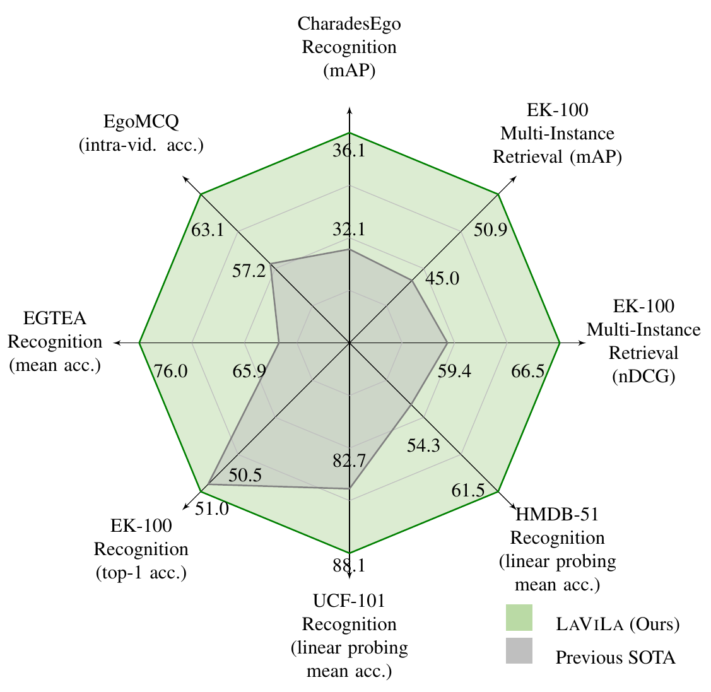
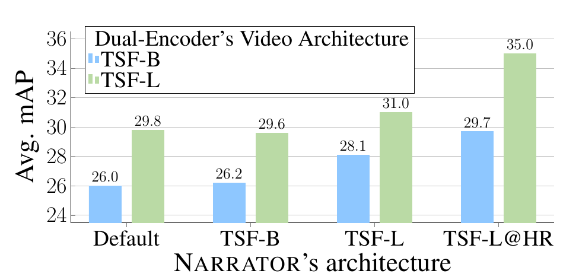
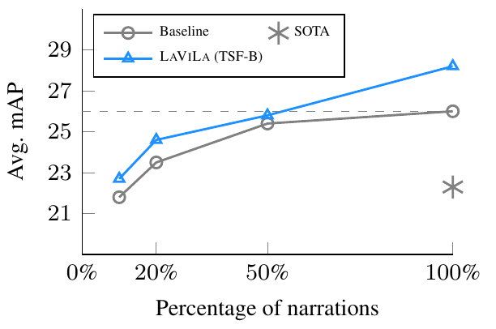
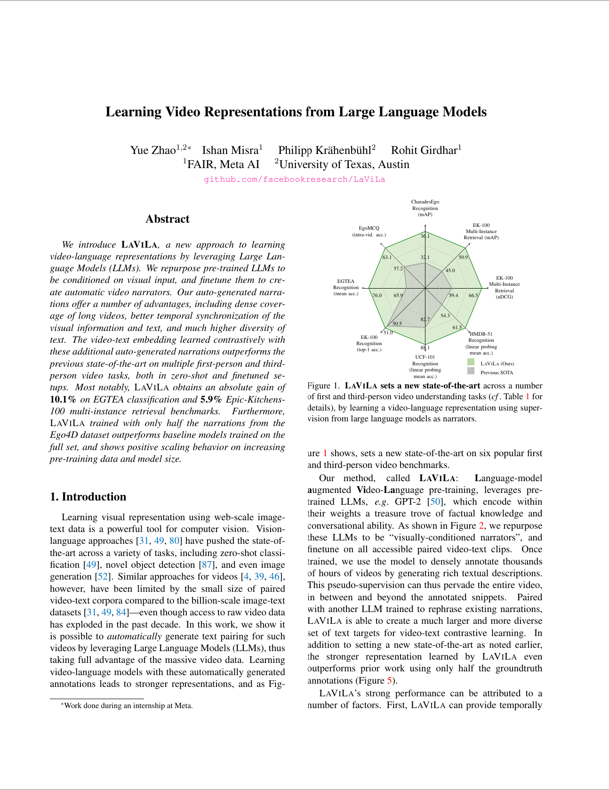

Learning Video Representations from Large Language Models
| Yue Zhao1,2 | Ishan Misra1 | Philipp Krähenbühl2 | Rohit Girdhar1 |
| 1FAIR, Meta AI | 2The University of Texas at Austin |
|
|
|
|
|
|
Overview

|
| We introduce LaViLa(Language-augmented Video Language Pretraining), a new approach to learning video-language representations by leveraging Large Language Models (LLMs). We repurpose pre-trained LLMs to be conditioned on visual input, and finetune them to create automatic video narrators. Our auto-generated narrations offer a number of advantages, including dense coverage of long videos, better temporal synchronization of the visual information and text, and much higher diversity of text. The video-text embedding learned contrastively with these additional auto-generated narrations outperforms the previous state-of-the-art on multiple first-person and third-person video tasks, both in zero-shot and finetuned setups. Most notably, LaViLa obtains an absolute gain of 10.1% on EGTEA classification and 5.9% Epic-Kitchens-100 multi-instance retrieval benchmarks. Furthermore, LaViLa trained with only half the narrations from the Ego4D dataset outperforms baseline models trained on the full set, and shows positive scaling behavior on increasing pre-training data and model size. |
Narrator Examples (egocentric videos)
Video |
 |
 |
 |
|
Human narration: |
C separates the yarn. | C lifts container. | C operates the camera. | |
Narrator (run 1) |
C stetches the thread with both hands. |
C wipes the countertop with a sponge. |
C takes a photo shot. | |
Narrator (run 2) |
C pulls out the yarn with her right hand. |
C moves the container. | A man X looks at the camera. |
| ^The starting "C" stands for "camera wearer" according to Ego4D's narration format. |
Narrator Examples (third-person videos)
Video |
 |
 |
 |
|
Ground-truth caption: |
Pastry chef cutting bread into slices during the preparation of a dessert, inside a kitchen. |
Close-up shot of the hands of an experienced baker skillfully kneading bread dough. |
Chef preparing a sauce in a blender, adding different ingredients while blending. |
|
Narrator (run 1) |
so now we're going to slice the bread | i'm gonna make a little hole in the middle of the dough here |
all right let's blend this up | |
Narrator (run 2) |
now i'm going to do is just slice this up into a nice chunk and then we're going to place it on the plate |
you just keep kneading it | the last step to making this is to blend the ingredients in the food processor |
Main Results
|
 (a) State-of-the-art results on a wide range of video tasks. |
 (b) LaViLa scales with Narrator size. Default refers to only using original narrations. |
 (c) LaViLa scales with human annotation size. |
People
 Yue Zhao |
Ishan Misra |
Philipp Krähenbühl |
 Rohit Girdhar |
Paper
|  |
Y Zhao, I. Misra, P. Krähenbühl, R. Girdhar Learning Video Representations from Large Language Models Tech Report [arXiv] [code/models] [bibtex] |
Acknowledgement
| We thank Naman Goyal, Stephen Roller and Susan Zhang for help with language models, Kevin Qinghong Lin for help with EgoVLP, and the Meta AI team for helpful discussions and feedback. This material is based upon work in-part supported by the National Science Foundation under Grant No. IIS-1845485. The website template is borrowed from omnivore. The egocentric videos are from Ego4D. The 3rd-person videos of cutting a loaf, kneading a dough, and preparing a sauce in a blender are licensed under the Mixkit Stock Video Free License. |